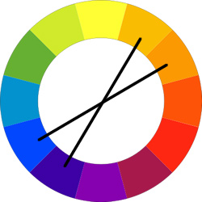
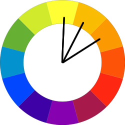

CSS
Developers had many ideas regarding how the elements could be presented out in the web since HTML did not have any method of styling pages. Although it was not part of Berners-Lee’s motivation, there were few languages for web page layout and CSS was the chosen to be published in December of 1996. It is also known as Cascading Style Sheets is a stylesheet language that is used to describe the appearance of a document in terms of how the HTML elements are presented.
◆ Web Page Layout
A. ViolaWWW Browser
- It was created by Take Pei-Yuan Wei in 1991
- It was a stylesheet incorporated into his own browser
- It has the basic navigation features such as bookmark list, and history list that allows one to traverse the documents automatically.
- It is an extensible World Wide Web hypermedia browser that supports interactive objects and features like stylesheets and tables.
- It did not succeed to be a standard, but it was one of the style sheet inspiration for today’s specifications.
B. Netscape Navigator
- It was developed by Marc Andreessen on October 13th 1994
- It was extended HTML language which includes presentational and unstandardized HTML.
C. Cascading HTML Style Sheets
- It was proposed by Håkon Wium Lie in October 1994
- It supported multiple stylesheet viewing to maintain personal-freedom of the web.
- It was further simplified and was published as CSS spec in December of 1996
◆ Cascading Style Sheet (CSS) as a Specification

Håkon Wium Lie
Håkon Wium Lie is a Norwegian web pioneer is known to be the Father of CSS. He proposed the concept of Cascading Style Sheets (CSS) in 1994 while working with the Tim Berners-Lee at CERN. Variuos ideas were already proposed before CSS, which aims to be the standard way of suggesting how the users would like the web pages appear. Before it was finally published, it was known as the Cascading HTML Style Sheets (CHSS) and it seemed to need improvement. Then after simplifing his proposal, it was then published successfully and is now continuously being utilized by developers with the certainty that it will function across browsers seamlessly
CSS Levels
▶ CSS Level 1
CSS 1 specification is considered obsolete by the CSS Working Group as it was the first specification established. It was described as a simple style sheet mechanism which allows the users to include styles like colors and fonts to HTML documents. Multiple stylesheets from different users is supported to cater their needs and preferences.
There were basic concepts included in this level of recommendation such as the containment in HTML defining how HTML and style sheets can be linked. Grouping was also included to reduce the style sheet’s size.a To have the same function with the parent element, inheritance can be used. In this case, any element that did not have any assigned style will inherit the style of its parents. In this level, selectors can either be a class, an ID or a context. Lastly, comments were included for the developers’ use and it formatted similarly to C programming language.
Pseudo-classes and pseudo-elements in CSS1 extend addressing to allow eternal information take effect with the formatting process. These are Anchor pseudo-classes, Typographical pseudo-elements, the 'first-line' pseudo-element, the 'first-letter' pseudo-element, Pseudo-elements in selectors, and Multiple pseudo-elements. The CSS1 supposes that each formatted element results in rectangular boxes. Elements can either be formatted as block-level or inline. Different style properties can have any value assignment. These style properties are font, color, text, box, and classification properties.
▶ CSS level 2
CSS level 2 had several problems detected though it already passed the recommendation stage. CSS level 2.1 was then specified. The problems were addressed by maintaining the compatibility with the widely accepted CSS2 and removing CSS2 features that were rejected by the CSS community. Conventions were added such as conventions of document language elements and attributes where it is stated that CSS values should be delimited by single quotes while language attributes should be delimited by double quotes. Property definitions contains key information including value, initial, applies to, inherited, percentage values, media groups and computed value. A property can also be specified as a shorthand property which means that authors can specify the values of properties with a single property.
▶ CSS level 3
Module by module, CSS 3 forms on CSS level 2 and adds functionalities to CSS 2.1. It was in the level 3 when selectors were defined furthermore. These selectors represent structure which can be used as a condition. Selector syntax is also case sensitive within the ASCII range depending on the document language. A selector is a chain of simple selector/s that are delimited by combinators which begins with a type selector or universal selector. This simple selector is either a universal selector, type selector, attribute selector, class selector, ID selector, or pseudo-class. Additionally, a list of selectors delimited by comma represent the combination of elements selected by each selector. The combinators can be identified as either a descendant combinator, child combinatory or a sibling combinator accordin to this level.
The specificity is the process of which the browsers decide what CSS property values are the most important to a specific element, and consequently will be operated. A selector’s specificity can be calculated according to the following CSS3 recommendation:
- the count of ID selectors in the selector
- the count of class selectors, attributes selectors, and pseudo-classes in the selector
- the count of type selectors and pseudo-elements in the selector
- ignore the number of universal selector
▶ CSS level 4
Extending the level 3, level 4 entitled Selectors Level 4 have been improved and designed to be usable in accordance to performance-critical code. Aside from simple selector, it has now a type of selector which is called compound selector. This selector is not separated by a combinator and represents a set of conditions on a single element. A complex selector, on the other hand, is a sequence of compound selector/s separated by combinator.
Document Object Model, also known as DOM, is used for evaluating selectors which can result into document tree or source document. Selectors such as scoped selector and relative selector are included in level 4. Namespace prefixes are supported by selectors in this level as well. These namespace prefixes are declared with the ‘@namespace’ rule as indicated. Error handling is already included and must be observed by the user agents. Another feature inlcuded was Logical combinators and User action pseudo classes.
For time-dimensional Pseudo-classes, there are three classifications that describes the elements’ state in a timeline. The Current-element Pseudo-class, Past-element Pseudo-class and Future-element Pseudo-class are the three classifications that was described earlier. Input Pseudo-classes are also included such as the input control states, input value states and input value-checking that are mainly used for the users’ input. Lastly, the tree-structural pseudo-classes is used to select based on the information in the document tree which cannot be represented by a combinatory or a simple selector. The child-indexed and the typed child-indexed pseudo classes were also included.
HTML Style Sheets
HTML style sheet is a source of styles for the HTML documents.
A style sheet control the appearance or aspect and layout or multi elements on the webpage, also the webpage design to avoid redundancy by a set of commands.
▶ Author styles
a. It recommends to use external style sheet also known as linked.
b. It can also use embedded style sheet also known as internal.
c. It is an inline style.
▶ User styles
a. In some browsers provide non-standard alternatives through extensions or plugins.
▶ User agent styles
a. It is a sample default user agent style sheet from CSS 2.1
Three types of Style sheets
1. Internal – it is a type of stylesheet that is defined within a <style> tag and in the HTML document it is embedded in the <head> portion.
2. External – it is a type of stylesheet that which have a css extention and it use <link> tag in the HTML file.
3. Inline – it is a type of stylesheet that is placed or written inside of the HTML file using a style attribute within an element’s tag.
◆ CSS Statements
CSS Statements are building blocks that start with any non-space character and ends with a semi-colon.
Kinds of Statement
▶ Rulesets – also known as rules. It consist of a selector which associate CSS declarations collection to a condition.
▶ At-rules – it begins with an ‘@’ at sign symbol with an identifier.
Identifiers
@charset – it is used in the stylesheet which specify the character.
@import – it import style rules in another stylesheet.
@namespace - it is used to restrict the type, universal and attribute selectors.
@media – it is used to apply styles from one or more media.
@supports – it is also called a feature query.
@page- when printing a document, it is used to modify CSS properties.
@font-face – it allows authors to use or specify fonts.
◆ CSS Selectors
CSS Selectors are used to define a style for an element or a group of elements.
Simple Selectors
1. Type Selector
- the type selector applies styling through utilizing the name of an element. When used, styling will be applied to all instances of the element.
2. Class Selector
- the class selector uses the name specified in a class attribute. Styling using the class selector is done by placing a ‘.’ character before the class name.
3. ID Selector
- the ID selector applies style on an element based on the name specified in an ID attribute. The syntax ‘#’ followed by the ID name is followed when specifying styling using an ID name.
4. Universal Selector
- the universal selector (*) is applicable for styling elements of any type. All elements can be selected or may be narrowed based on need.
5. Attribute Selector
- the attribute selector works for applying style based on an attribute or a specified value of an attribute.
Combinators
Combinators specify relationships between selectors and are be used to be more specific with element selection.
1. Descendant combinator ( )
- the descendant combinator selects the descendants of the first element.
2. Child combinator (>)
- the child combinator selects the direct children of the first element.
3. Adjacent sibling combinator (+)
- the adjacent sibling combinator selects adjacent siblings of an element.
4. General sibling combinator (~)
- the general sibling combinator selects elements that are siblings of another specified element.
Pseudo-classes and Pseudo-elements
Elements can also be styled according to their state. Pseudo-classes allow elements to be selected based on other information about the element. An example would be styling the appearance of a button when hovered on or clicked. This uses the ‘:’ symbol. If the web designer wants to specify an element based on its position then pseudo-elements can be used. Pseudo-elements use the ‘::’ symbol and can select an element based on its position. An example would be selecting the first line of a paragraph and such.
Selector group
Styling different elements with one style block is possible with the selector group. Multiple selectors, separated by a comma or the ‘,’ symbol, can be used to style different instances of elements.
◆ CSS Rule Precedence
For the reason that specified styles might clash because elements could be stylized by different selectors, the CSS rule precedence is followed. Prioritizing a style is done to resolve conflict.
Three ways on how conflict is resolved:
1. Origin and Importance
- Styles can be prioritized based from its origins and whether or not it uses the !important property.
2. Specificity
- The more specific the selector for a style is, the more it is prioritized.
3. Order
- Inline styles are prioritized but if an external CSS is used, the later declaration based on line number will be prioritized.
◆CSS Declarations
CSS Declarations are formed through properties, which are defined thru values. These blocks of declaration combined with selectors then altogether create rule sets (CSS Properties, n.d.).
▶ Properties:
1. Shorthand properties - collection of values which allows identifying several elements. As stated in its definition on the CSS specification, shorthand properties identify and groups together properties which targets or define the same object. This then makes developers to work on the style sheet more efficiently (Shorthand properties, 2018).
Example: border properties, margin properties
Note: In this code, the background color will be overridden by the Doge.png image.
background-color: red;
background: url(“Doge.png”);
Explanation: If you don’t set the values properly, they are sent back to their initial value
▶ Additional Information:
CSS is capable of universally defining the value of each and every property in the style sheet by utilizing the universal shorthand property which is all.
▶ Universal Property Values:
1. inherit – inherits the value from its origin element, otherwise known as parent element.
2. initial – it defines the value of the property by the default value of the browser’s local style sheet.
3. unset – makes the value of the property to its original value.
4. revert – it reverts the value of the property back to its form of origin by basing it to the style sheet of the user. If the user’s style sheet is not made available, the default style sheet from the user-agent is utilized.
Source: (Shorthand properties, 2018)
2. Vendor-specific extensions - used by browser vendors as a prefix for the names of experimental or non-standard CSS. Only after the extensions are standardized will the prefix be removed and stated as is. Although this is the case, browser vendors are veering away from it in order to put user-controlled flags or preferences. It is denoted by the character ‘-’ followed by the identifier that the browser vendor used and anoder ‘-‘ then a name which identifies what the property will do (Roberts, 2014).
Example: -moz-opacity, -webkit-transition, -opera-animation
3. Custom properties - aka CSS variables (experimental). These are customized properties indicated by the characters (--) as the prefix.
Example:
1. fallback value - in case there is no defined variable, a default value or fallback value is utilized.
2. As a code:
:root{
--kulay: rgb(255, 0, 0);
}
#backgroundInColor{
background-color: var(--kulay);
}
Source: (Custom properties, 2017)
For more information about CSS properties, click here
▶ Values:
1. Value Processing – processes are declared, cascaded, specified, computed, used, actual values.
-
Processes
1. Declared Value – refers to any property which is defined and associated to a certain element.
2. Cascaded Value – a value produced by the process of cascading.
3. Specified Value - every element has one specified value. It is created by processing cascaded value to the processes involving defaulting values.
4. Computed Value - calculated value as a result from a given set of elements.
5. Used Value - actual value used in a specified condition. This is created by processing computed value through different calculations then comparing it to a set of accepted values.
● numbers - integer or real number (scientific or decimal notation)
● dimensions - combination of numbers and unit ex. length, angle, time, frequency, resolution
Source: (Etemad & Atkins [Eds.], 2016)
2. Value Types
- keywords
● CSS - wide keywords ex. initial, inherit, unset - acts as either inherit or initial, refers to specs.
● Property-specific keywords
- numbers
● Length
● Angle
● Ratio – uses percentage (%)
- Strings
- Labels – can have multiple string values concatenated with one another.
- Colors
Source: (CSS value types, n.d.)
▶ Dimensions of Value Types:
-
Length Units
1. Length units
*font - em, ex, ca, rem
*viewport - percentage: vw, vh, vmin, vmax
▶ 2 Types of Length Units
1.) Relative Lengths - the length is based on another property’s length.
Example: em, ex, ch, vmin, vmax, percent (%)
2.) Absolute Lengths - the length is fixed. It is defined by a number value and then a unit.
Example: cm, in, pt
Source: (CSS Units, n.d.) -
Angle Units
2. Angle units - used in some gradient and transform durations
*deg, grad, rad, turn -
Time Units
3.Duration or Time units - typically used in transitions and animations
*s, ms -
Frequency Units
4. Frequency units - initially introduced in CSS2 for the now deprecated aural media type. It was reintroduced in CSS3 but is mostly unused.
*Hz, kHz -
Resolution Units
5. Resolution units - used in controlling the resolution of images as well as media queries.
*dpi (dots per inch), dpcm (dots per centimeter), dppx (dots per px)
*numbers with a percent symbol (%) as a suffix- URL and URIs
6. URL and URIs - url() function with an absolute or relative (to the stylesheet) URL.
*colors i.e. color keywords
*RGB hexadecimal notation - denoted by pound symbol (#)
*RGB functions - example: rgb(255, 0, 0), rgba () - alpha
*HSL functions -refers to the angles of the color wheel, example: hsl(0, 100%, 0%) where 0 refers to the angle in the color wheel, 100% for the saturation and 0% for lightness.
*currentcolor, transparent
▶ Additional information:
*Color Theory - sets the basic understanding for the associating colors with contrast, complementation and vibrancy.
*Contrast - sets the background and foreground apart by separating the colors used.
*Complementation - subjective way of relating colors with one another by choosing which combination of colors is visually appealing to the eye of the beholder.
*Vibrancy - refers to how the colors evoke emotions. This means that the brighter the color, the more energy it evokes while darker colors evokes less energy and more towards relaxing the viewer’s mind.
▶ Effective Color Scheme:
1. Triadic Color Scheme - colors which form an equilateral triangular shape in the color wheel compliments one another and have balanced vibrancy.

2. Split Complimentary Scheme - combination of colors opposite to one another are complimentary.

3. Analogous - combination of colors adjacent with one another.

Source: (Cannon, 2012)◆ CSS Preprocessors
CSS Preprocessors – framework or library which generates CSS using a custom language syntax that typically features that don’t exist in pure CSS i.e variables, control flow, nesting, minutes.
Example:
-
SASS
SASS - abbreviation for Syntactically Awesome Style Sheets. This allows developers to utilize rules for nesting, variables but in order to have these features , Ruby must be installed. It is prefixed by the dollar symbol ($).
▶ 2 Syntax of Sass
1. Indented - otherwise known as Sass wherein it is identified with the file extension “.sass”. Instead of utilizing brackets, it makes use of indentation. It’s syntax is not completely supported by CSS
2. SCSS - abbreviation for Sassy CSS and identified by the file extension “.scss”. It’s syntax is completely supported by CSS.
Source: (Coron, 2017) -
LESS
LESS - abbreviation for Leaner Style Sheets. Its syntax is very similar to CSS and prefixed by the at symbol (@) and defined by the file extension “.less”. In order to use it, Node.js must be available (Overview, n.d.).
-
Stylus
Stylus - does not have a prefix and is defined by the file extension “.styl”. Its syntax is compatible with CSS with the additional option of utilizing colons, semi-colons and brackets optional (Croom, 2012).
Note: These are not compatible with most browsers. It will need some extensions in order to run it.
◆ CSS Frameworks
CSS Frameworks – provides predefined CSS design functionality that can be reused, extended, or customized.
Example: Bootstrap, Bulma, Foundation
Source: (D., 2017)◆ CSS Polyfills
CSS Polyfills – provides features that developers expect browsers to provide natively (10 of the best polyfills, 2013).
Example: Modernizr, Selectivizr, html5shiv - URL and URIs